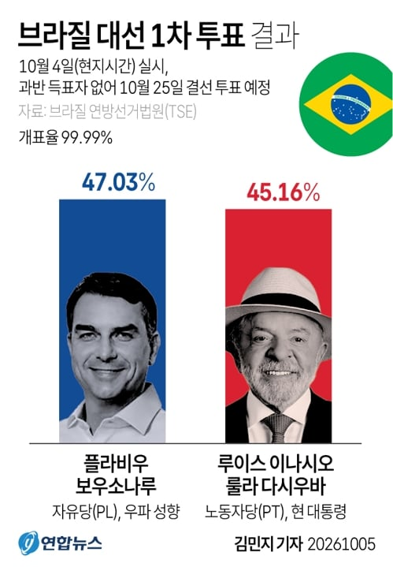
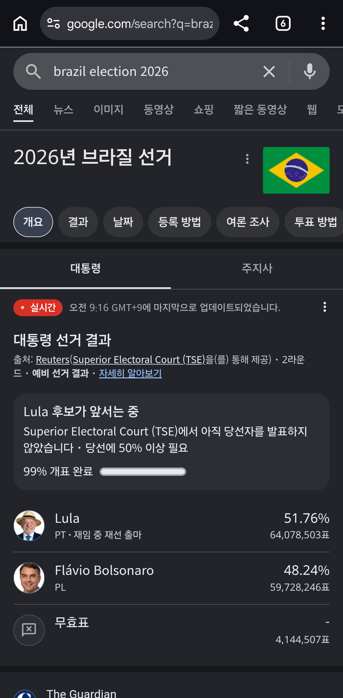

대선 1차 투표 결과 쿠데타 시도로 깜빵갔던 전임 대통령 자이르 보우소나루의 아들인
플라비우 보우소나루가 1위를 기록
많은 사람들이 이번엔 아들 보우소나루가 당선되지 않을까 예측했었는데

결선 투표에서 룰라가 역전 ㄷㄷ
어케했누

대선 1차 투표 결과 쿠데타 시도로 깜빵갔던 전임 대통령 자이르 보우소나루의 아들인
플라비우 보우소나루가 1위를 기록
많은 사람들이 이번엔 아들 보우소나루가 당선되지 않을까 예측했었는데

결선 투표에서 룰라가 역전 ㄷㄷ
어케했누
확정이라네 뉴스보면
헌정사상 최초라는데 ㅈㄴ 신기하네
1차투표도 극우 군소후보가 더 많았는데...
1차이후에 이미 대통령된마냥 개소리만 하고 다니다가 표 깎아먹은듯
손바닥에 부패 쓰기 ㅋㅋ
이거 단두대 매치라고 했는데 아들도 깜빵가나...
또룰라야?
트럼프때문이라던데 하도 대놓고 보우소나루 지지하니까
반감들어서
잘 가고 ㅋㅋㅋ
둘다 깜빵걸고 하는거라며
한놈은 간다
룰루랄라
브라질 관세 200퍼